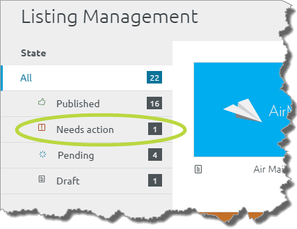
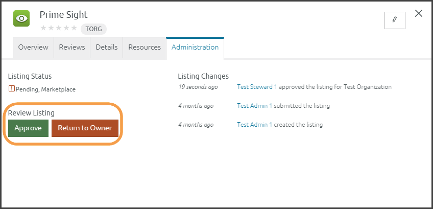
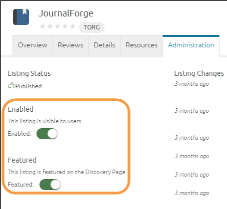

Center Steward: Approval/Rejection Listings
Before users can find and bookmark listings from Center, an org steward and Center steward must approve the listings as described in the following sections. After an org steward approves a listing, the Center steward must:
- Click the Needs action filter. To do this, click the drop-down Main Menu and select Listing Management. Click Needs action from the state panel on the left:

- Listings that need approval appear on the Needs action page. Click a listing to open its Detailed View.
- After reviewing the listing, click the Administration tab.
- On the left-side, click Approve or Return to Owner:

- If you approve the listing, the listing is automatically Enabled and it will appear in search results and be available to bookmark.
- If you click Return to Owner, type instructions explaining how the user should update the listing before resubmitting it. Then, click Return to Owner. The listing will move out of your queue until it is resubmitted and approved by an org steward.
- As a Center steward, you have two more decisions:
- Center Enabled -- Makes the listing visible to all users, i.e., it appears on the Search and Discovery Page and is searchable.
- Featured -- Activate the Featured button to add the listing to the group of Featured Listings that scroll across the top of the Search and Discovery Page, see Feature a Listing.

Related Info